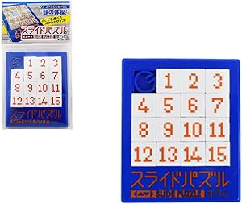
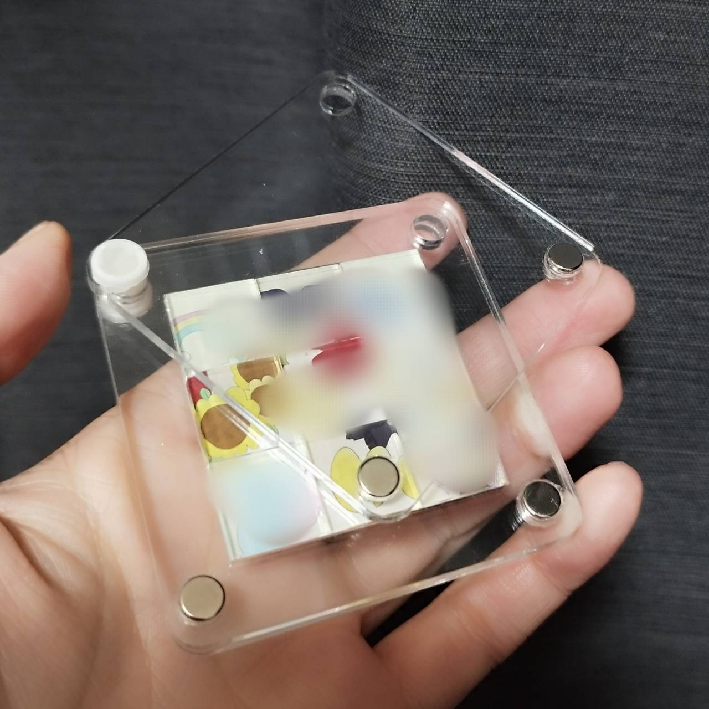
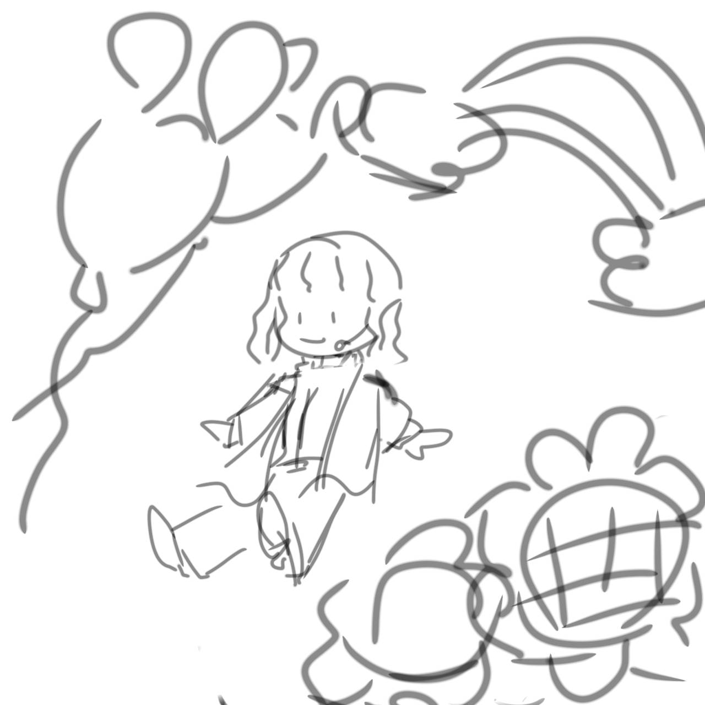
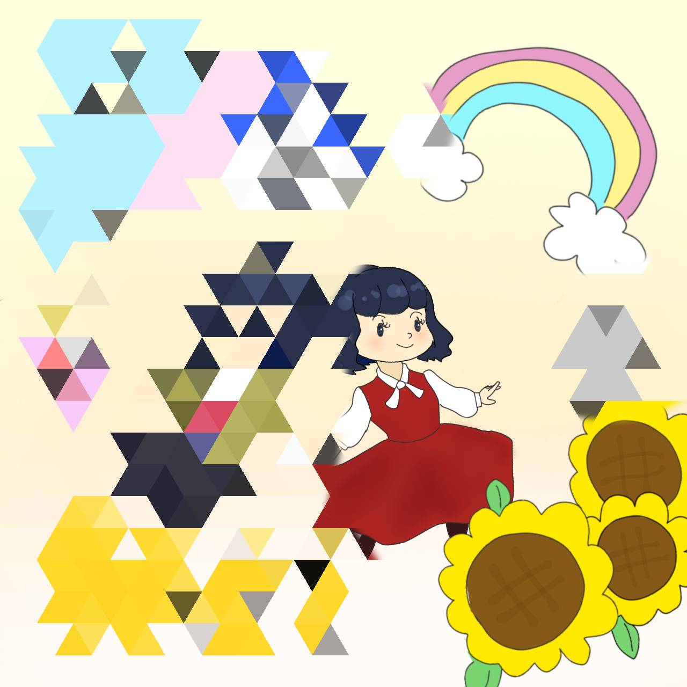

私は某千葉の国オタクであるが、
推しの従業員（リアルでも友達）が退職するので、これまでの感謝の意を込めてプレゼントを贈りたい
スライドパズルのキーホルダーを作る
→パズルを完成させて、やっと似顔絵も動画も見れるという「何が起きるかわからないドキドキ感」を贈りたい
イメージ：

成近屋 スライドパズルすうじ（15パズル・15ゲーム） ※画像はamazonより
表裏が見えるように外側はアクリルで覆う
→３層（中央のパズル部分、上下カバー部分）で作成
3層パーツのaiデータはこちらからダウンロード
→４隅に穴を開ける。左上：カバーが回転できるように留め具をつける

留め具のstlデータはこちらからダウンロード
表面は似顔絵的なイラストをUVプリンターで印刷
裏面は動画のURLに飛ぶQRコードを印刷
イメージ図と完成図（個人情報保護のためモザイクあり）：

※ QRコードを個人で作成・取得できる→ QRコード作成サイト／無料版